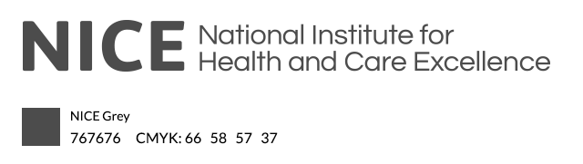
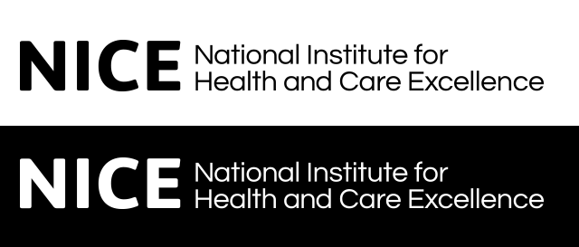
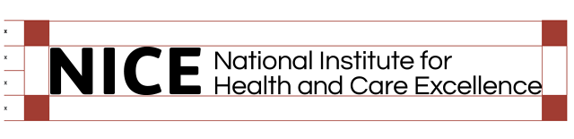
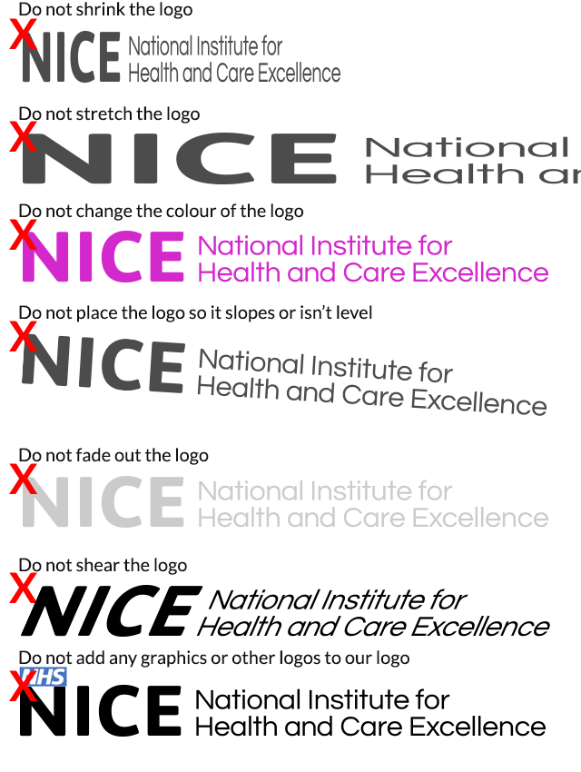
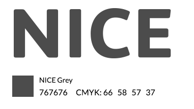
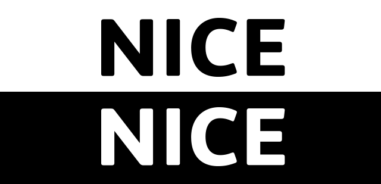

NICE Brand guidelines 2014
Master logo

Download the logo in PDF format
Download the logo in Adobe Illustrator format
Download the logo in Adobe Photoshop format
Download the logo as a PNG (with transparancy)
{kind=link}
Master logo - colour variations - only use black or white

Master logo - spacing requirements
The NICE logo has specific spacing and an exclusion zone that must be adhered to in any usage.
The requirements are highlighted below and all Master copies of the logos have been set to include the exclusion zone for ease of use.
The example below illustrates that any dimension X=half cap height of the font.

Master logo - what to avoid

Master logo - short version

Short logo - colour variations - only use black or white

Short logo - spacing requirements
The NICE short logo has specific spacing and an exclusion zone that must be adhered to in any usage.
The requirements are highlighted below and all Master copies of the logos have been set to include the exclusion zone for ease of use.
The example below illustrates that any dimension X=half cap height of the font.

Font
The font used is Lato, available free from Google:
Colour palette
-
Warning / message indicator/ action
#fb1b1b CMYK: 0 98 98 0 -
Tab header / Search button / Active state
#ffc100 CMYK: 1 25 100 0 -
Visual breadcrumb main category / button
#1167b7 CMYK: 89 60 0 0 -
Visual breadcrumb sub category
#00a7df CMYK: 73 16 1 0 -
Form submit / filter / positive action
#99ff8b CMYK: 37 0 66 0 -
Filter sub menu / dropdown
#c7ffbf CMYK: 89 60 0 0 -
Table content panel / category list / visual breadcrumb
#ededed CMYK: 6 4 4 0 -
Active tab header / sub menu visual breadcrumb
#f6f6f6 CMYK: 2 1 1 0 -
Sub tab header
#f9f9f9 CMYK: 1 1 1 0 -
Link colour
#01769d CMYK: 89 45 23 2 -
Rollover / hover state
#08455b CMYK: 96 66 45 31 -
Other text
#3e3e3e CMYK: 68 61 60 49
Colour contrast
When using any of the colours above in combination with any text or icon must be easily readable for all our users - this is known as being accessible. More information on this can be found at the Web Content Accessibility Guidelines (WCAG) as set forth by the World Wide Web Consortium (W3C). An accessibility checker is available below - it must pass to at least AA level.
Contrast Checker (opens in new window).
Using photographs
Photographs add depth to an article and are very useful in conveying meaning. Thy are also very attractive to the eye and are easy to scan, breaking up the page in an interesting way. What makes a good photo? Here are some pointers:
DO:
- Keep it simple
- Use photographs relevant to your topic or ones which add more meaning, such as an example talked about in the article
- Use clinical images or on location
- Use .jpg for pictures and .png for graphics or diagrams
- Use images that are taken by NICE or are from paid for stock art sites to avoid copyright infringement
- Show the photograph in context of the article
- Use a professonal photographer
- Only use the photo if it genuinely adds to the value of the article
DON'T:
- Show doctors in white coats or stereotypical situations
- Show coloured liquids in laboratory settings (it isn't real)
- Show false stock art images of people in 'team building' situations or being overly happy
- Show 'staged' photos or ones that are clearly false
- Show heavily Photoshopped 'perfect' models - use real people instead
- Show any kind of potentially offensive or sexual images
- Use copyrighted material from other sites without permission or watermarked images
- Show images taken in other countries unless the article is based there - keep it UK based
- Show open packaging or pharmaceutical drugs that could have been tampered with (broken pills for example)
- Show brand names unless they are in context with the article
- Stretch or alter the original image aspect ratio
- Alter the photo unless you have been trained
- Import a very large photo and then use code to shrink it down to your desired size - this impacts page load times and is expensive for the user to download. Only use the correct image size to begin with
- Show anything that can bring NICE into disrepute
Stationary
NICE Letterhead - Manchester
NICE Letterhead - London
NICE DL Envelope
NICE C5 Envelope
NICE C4 Envelope
NICE Compliment Slip
Powerpoint template
1024x768 slide ready for your text
Business card
Simply email the details to the design team who will create it. Or, If you prefer, contact the design team for the template. You will need Adobe InDesign to edit it.
Language and tone
Abbreviations and glossary
The guidelines manual
Questions?
Please email the design team and we will do our best to help.
Simply email the details to the design team who will create it. Or, If you prefer, contact the design team for the template. You will need Adobe InDesign to edit it.
Language and tone
Abbreviations and glossary
The guidelines manual
Questions?
Please email the design team and we will do our best to help.